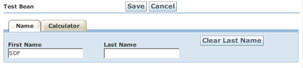

Back: Actions Next: BeanContexts
There may be many times when you have more information for a form than can fit on a single page. One method of splitting up this information is to group it into tabs. Of course, WWB makes tabs easy too. Let's look at com.googlecode.wicketwebbeans.examples.tabs.TabBeanPage. The Java code is exactly the same as ActionBeanPage, but the beanprops are a little different:
# Tabs Example
TestBean {
props: -number;
tabs:
name { props: firstName, lastName, action.clearLastName },
calculator { props: operand1, operand2, result };
}
Here we just use TestBean "props" to specify the properties we don't want. "name" and "calculator" specify the tab groupings. We specify a "props" parameter for each tab to say which properties fall on which tab, and in what order. The result looks like:

Alternately we could configure all of the properties in TestBean's "props" if we wanted. By default all properties that weren't specified for a tab fall in the first tab, so we could have said:
# Tabs Example
TestBean {
props: firstName, lastName, action.clearLastName, -number;
tabs:
name, calculator { props: operand1, operand2, result };
}
and gotten the same result.
Back: Actions Next: BeanContexts